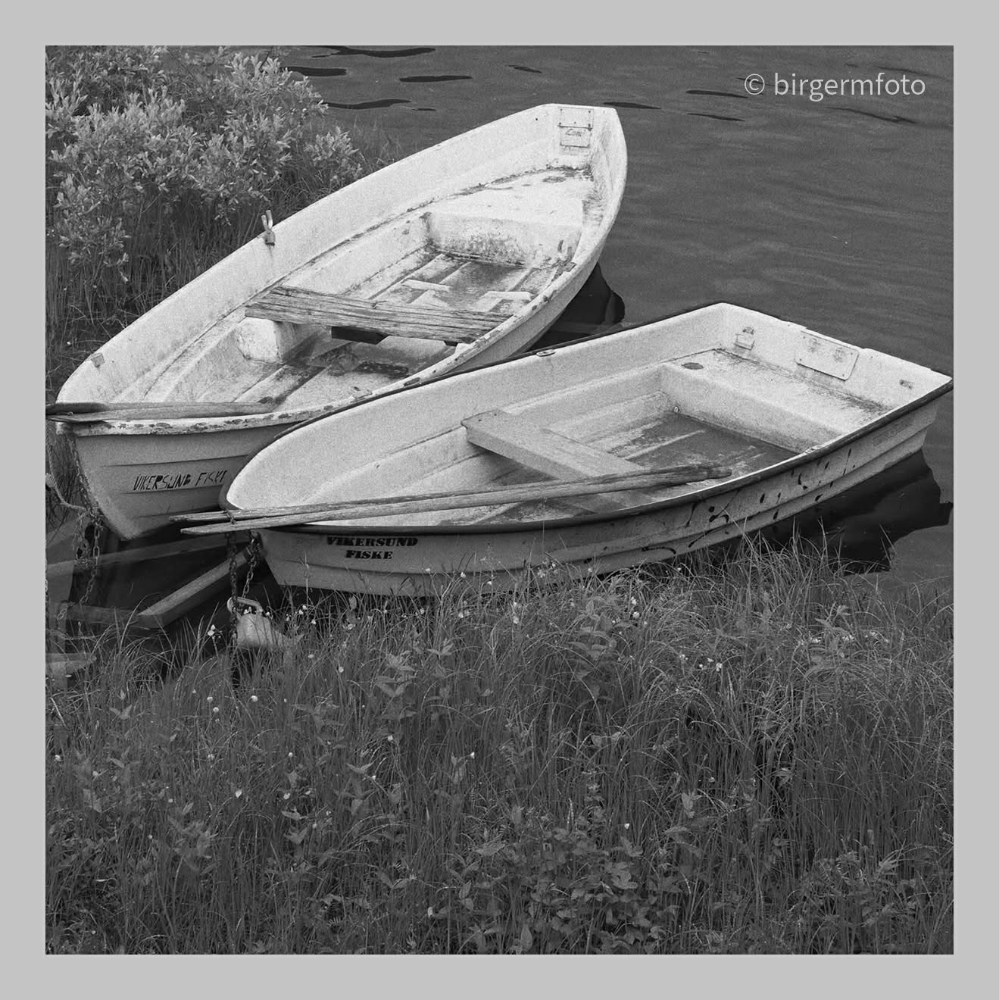
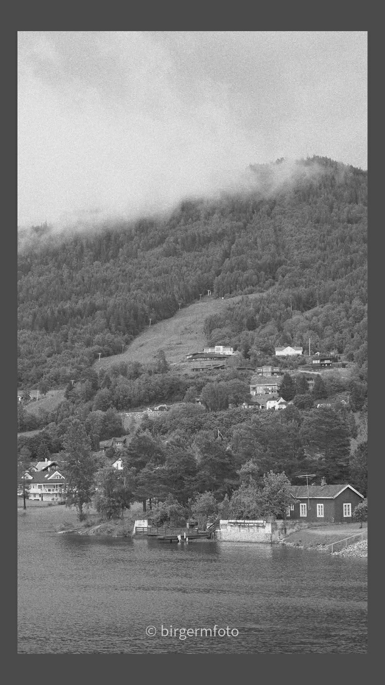
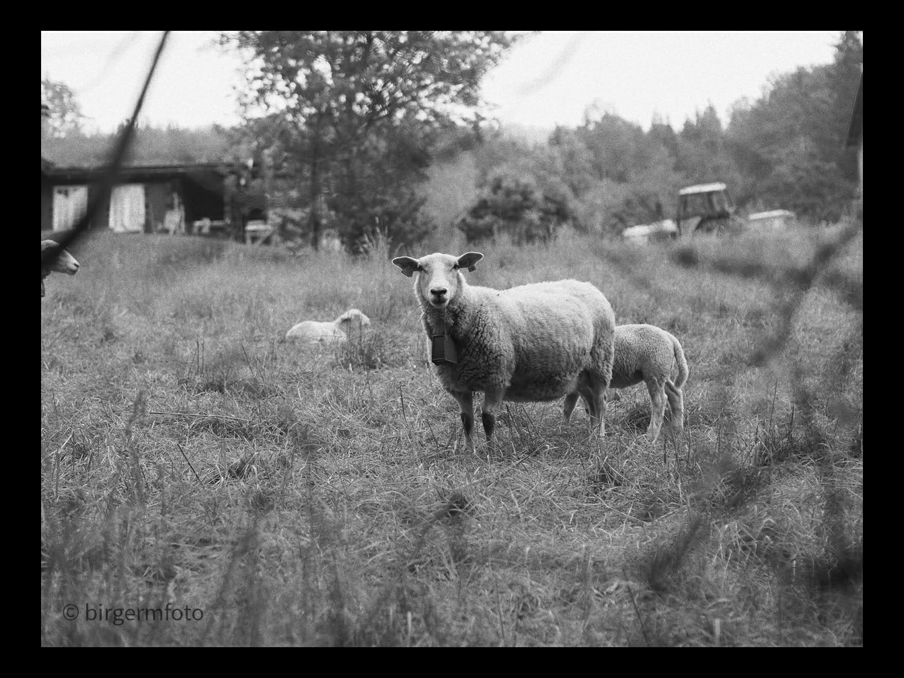
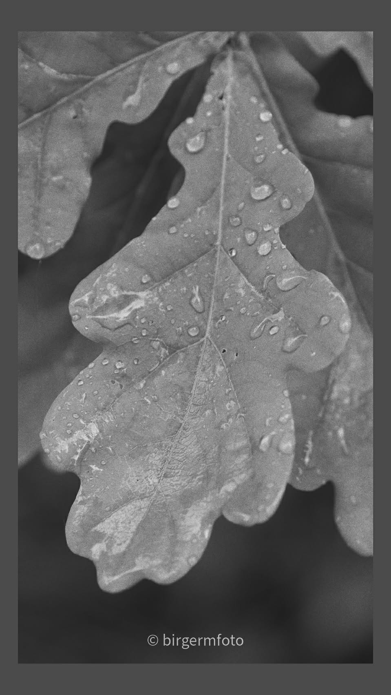
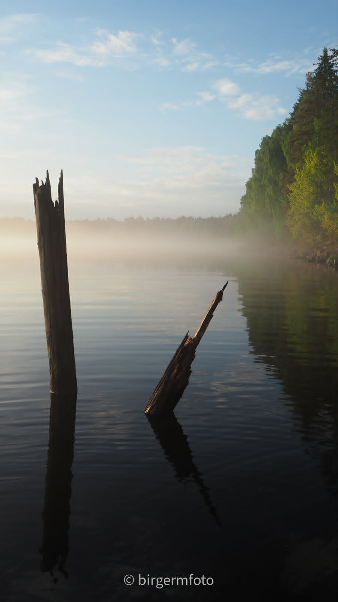

Utvalgte fotografier
Galleri
Et utvalg fotografier fra naturen og nærområdet. Flere bilder og egne kategorier kommer etter hvert.





Utvalgte fotografier
Et utvalg fotografier fra naturen og nærområdet. Flere bilder og egne kategorier kommer etter hvert.




